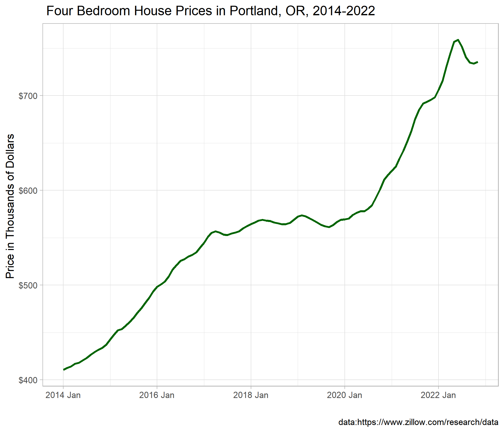
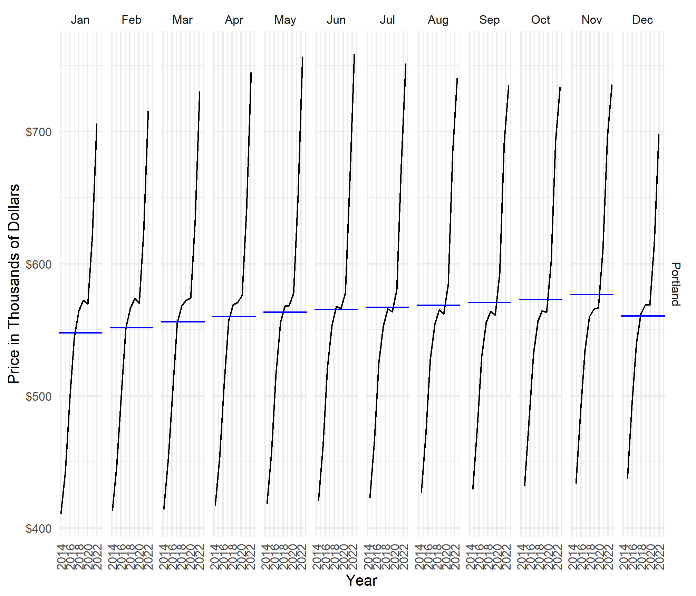
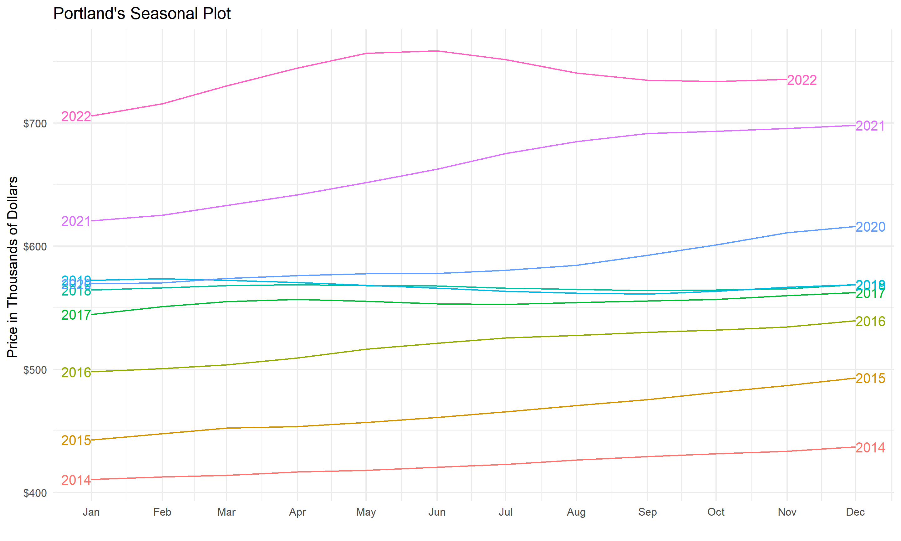
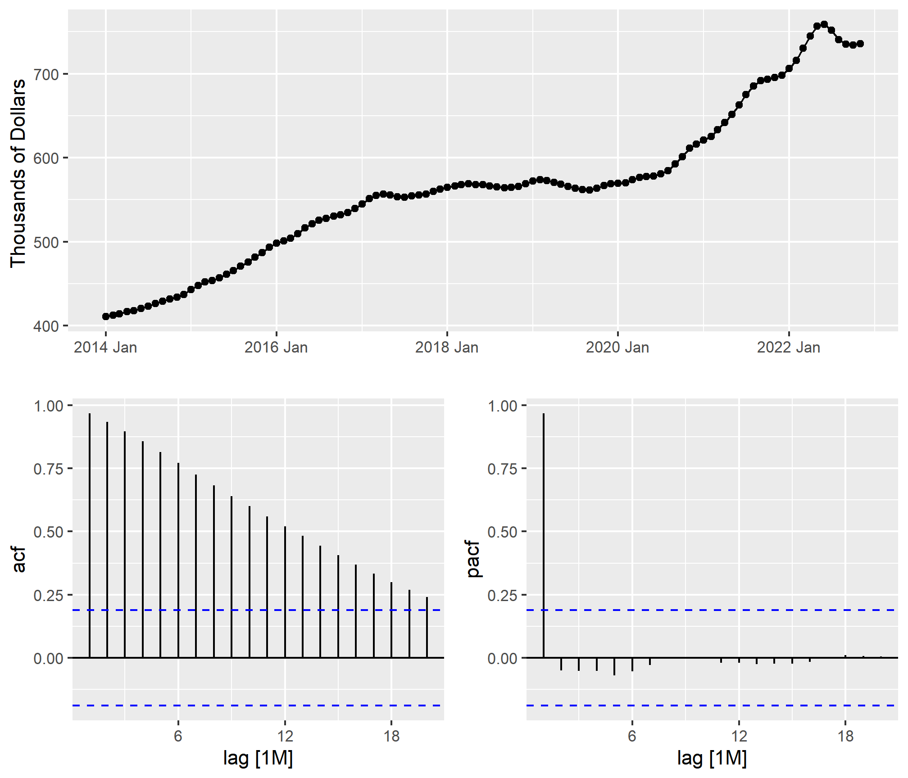
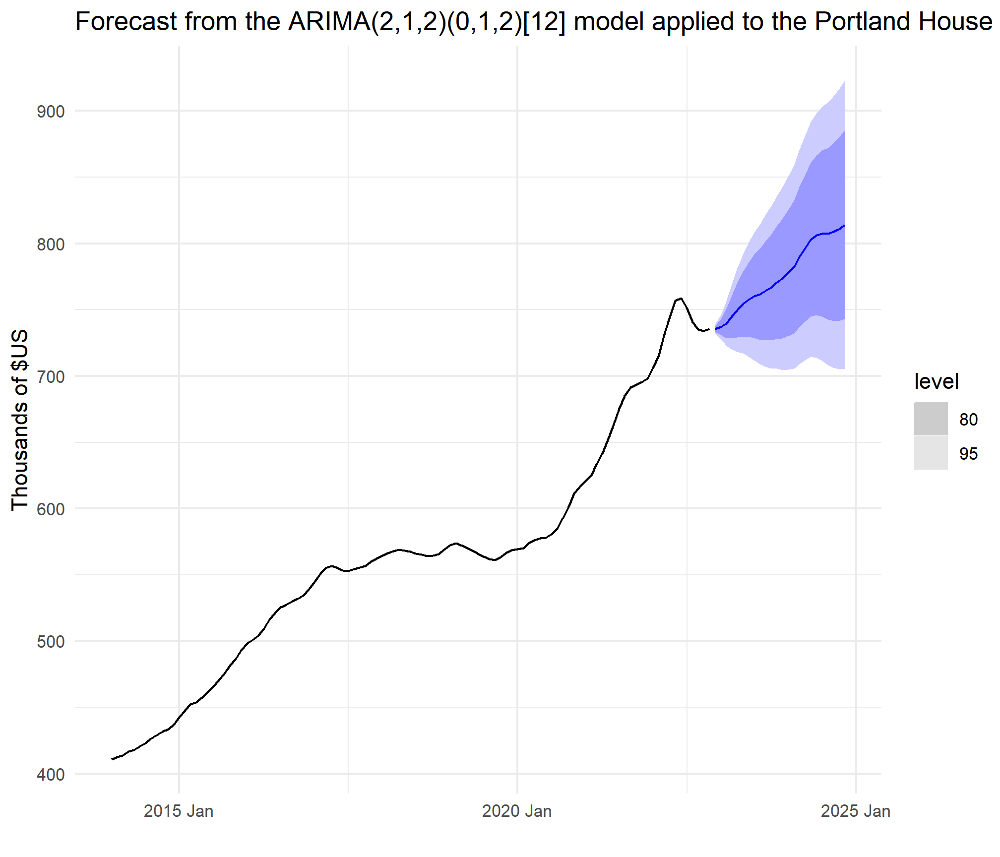

In this project, I will perform Time series analysis using the Zillow Home Value Index (ZHVI) dataset: A smoothed, seasonally adjusted measure of the typical home value and market changes across Portland, OR, four bedroom houses. It reflects the typical value for homes in the 35th to 65th percentile range.
Here is the link: https://www.zillow.com/research/data/
'data.frame': 13528 obs. of 11 variables:
$ RegionID : int 6181 12447 39051 17426 6915 40326 13271 18959 54296 38128 ...
$ SizeRank : int 0 1 2 3 4 5 6 7 8 9 ...
$ RegionName: chr "New York" "Los Angeles" "Houston" "Chicago" ...
$ RegionType: chr "city" "city" "city" "city" ...
$ StateName : chr "NY" "CA" "TX" "IL" ...
$ State : chr "NY" "CA" "TX" "IL" ...
$ Metro : chr "New York-Newark-Jersey City, NY-NJ-PA" "Los Angeles-Long Beach-Anaheim, CA" "Houston-The Woodlands-Sugar Land, TX" "Chicago-Naperville-Elgin, IL-IN-WI" ...
$ CountyName: chr "Queens County" "Los Angeles County" "Harris County" "Cook County" ...
$ 2000.01.31: num 284723 302701 146377 179997 154391 ...
$ 2000.02.29: num 286885 303000 146270 180472 154691 ...
$ 2000.03.31: num 288711 304356 145921 181368 154943 ...
Show the code
#Converting the Date from factor to characterhouse_clean <- house_price %>%mutate(Monthly_parsed =as.Date(Monthly,"%Y.%m.%d"))house_clean[["Monthly"]]<-as.character(house_clean$Monthly)house_price[["Monthly"]]<-as.character(house_price $Monthly)summary(house_clean)
RegionID SizeRank RegionName RegionType
Min. : 3300 Min. : 0 Length:3720200 Length:3720200
1st Qu.: 17381 1st Qu.: 3511 Class :character Class :character
Median : 31963 Median : 7196 Mode :character Mode :character
Mean : 51628 Mean : 8235
3rd Qu.: 46317 3rd Qu.:11713
Max. :827230 Max. :28439
StateName State Metro CountyName
Length:3720200 Length:3720200 Length:3720200 Length:3720200
Class :character Class :character Class :character Class :character
Mode :character Mode :character Mode :character Mode :character
Monthly Price Monthly_parsed
Length:3720200 Min. : 17773 Min. :2000-01-31
Class :character 1st Qu.: 172701 1st Qu.:2005-09-30
Mode :character Median : 244810 Median :2011-06-30
Mean : 321841 Mean :2011-07-01
3rd Qu.: 369075 3rd Qu.:2017-03-31
Max. :8337561 Max. :2022-11-30
NA's :1201126
We see some missing values in the Price variable, but before I deal with those values, I will filter my data to the cities that I am interested the most
RegionID SizeRank RegionName RegionType
Min. :13373 Min. :22 Length:107 Length:107
1st Qu.:13373 1st Qu.:22 Class :character Class :character
Median :13373 Median :22 Mode :character Mode :character
Mean :13373 Mean :22
3rd Qu.:13373 3rd Qu.:22
Max. :13373 Max. :22
StateName State Metro CountyName
Length:107 Length:107 Length:107 Length:107
Class :character Class :character Class :character Class :character
Mode :character Mode :character Mode :character Mode :character
Monthly Price Monthly_parsed
Length:107 Min. :410582 Min. :2014-01-31
Class :character 1st Qu.:506597 1st Qu.:2016-04-15
Mode :character Median :564473 Median :2018-06-30
Mean :563372 Mean :2018-06-30
3rd Qu.:588606 3rd Qu.:2020-09-15
Max. :758797 Max. :2022-11-30
After filtering the data, we don’t have any missing values
Coerce to a tsibble with as_tsibble()
A time series can be recorded as a tsibble object in R. tsibble objects extend tidy data frames (tibble objects) by introducing temporal structure, and to do it, we need to declare key and index. In this case, the Monthly_parsed containing the data-time is the index and the RegionID is the key. Other columns can be considered as measured variables.
To visualize the data, I could use the autoplot() command, but I rather to create my graph with ggplot.
Show the code
plot_pdx_house <- tsibble_pdx %>%ggplot(aes(x= year_month, y= Prices)) +geom_line(size=1, color="darkgreen")+labs(y="Price in Thousands of Dollars ", x=" ",title=" Four Bedroom House Prices in Portland, OR, 2014-2022 ",caption ="data:https://www.zillow.com/research/data")+scale_y_continuous(labels=scales::dollar_format())+theme_light()plot_pdx_house

Data is non- stationary, we can see a trend-cycle component in the graph above.
Show the code
tsibble_pdx %>%gg_subseries(Price/1000)+labs(y="Price in Thousands of Dollars",x="Year")+theme_minimal()+scale_y_continuous(labels=scales::dollar_format())+theme(axis.text.x =element_text(angle =90, vjust =0.5, hjust=1))

Show the code
tsibble_pdx%>%gg_season(Price/1000, labels ="both")+labs(x="",y="Price in Thousands of Dollars ", title="Portland's Seasonal Plot")+scale_y_continuous(labels=scales::dollar_format())+theme_minimal()

Determining Stationarity
In our analysis, we use the Kwiatkowski-Phillips-Schmidt-Shin (KPSS) test (Kwiatkowski et al., 1992). In this test, the null hypothesis is that the data are stationary, and we look for evidence that the null hypothesis is false. Consequently, small p-values (e.g., less than 0.05) suggest that differencing is required. The test can be computed using the unitroot_kpss() function.
The p-value is reported as 0.01 if it is less than 0.01, and as 0.1 if it is greater than 0.1. In this case, the test statistic (1.946) is bigger than the 1% critical value, so the p-value is less than 0.01, indicating that the null hypothesis is rejected. That is, the data are not stationary.
As we saw from the KPSS tests above, one difference (d) is required to make the tsibble_pdx data stationary.
Autocorrelation
Show the code
tsibble_pdx %>%gg_tsdisplay(Prices,plot_type='partial')+labs(y="Thousands of Dollars ", x=" ")

ACF does not drop quickly to zero, moreover the value is large and positive (almost 1 in this case). All these are signs of a non-stationary time series. Therefore it should be differenced to obtain a stationary series.
PACF value r1 is almost 1. All other values ri,i >1 are small. This is a sign of a non stationary process that should be differenced in order to obtain a stationary series.
The data are clearly non-stationary, so we will first take a seasonal difference. The seasonally differenced data are shown below:
tsibble_pdx %>%model(ARIMA(Prices ~pdq(2,1,2) +PDQ(0,1,2))) %>%forecast() %>%autoplot(tsibble_pdx) +labs(y=" Thousands of $US ",x =" ",title="Forecast from the ARIMA(2,1,2)(0,1,2)[12] model applied to the Portland House Prices data")+theme_minimal()

Show the code
##Price in Thousands of Dollarstsibble_pdx %>%model(ARIMA(Prices ~pdq(2,1,2) +PDQ(0,1,2))) %>%forecast()